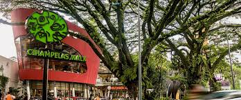

kami di CIWALK

setelah kami ke kampus UNIKOM kami pun pergi ke CIWALK, kami di ciwalk untuk bermain jalan-jalan dan mencari oleh-oleh khas bandung.
setelah itu kami pun pergi untuk makan, dan setelah makan kami pergi untuk pulang ke cirebon.
Berikut adalah beberapa poin penting tentang Ciwalk Bandung:
1.Konsep dan Lokasi: Ciwalk mengusung konsep pusat perbelanjaan modern dengan desain yang terbuka dan nyaman, menggabungkan area belanja, hiburan, dan tempat makan. Ciwalk terletak di jalan Cihampelas, yang dikenal dengan kawasan belanja dan wisata yang ramai di Bandung. Lokasinya yang strategis membuat Ciwalk menjadi salah satu tempat favorit bagi wisatawan dan warga Bandung.
2.Fasilitas Belanja: Di Ciwalk, pengunjung bisa menemukan berbagai jenis toko yang menawarkan produk-produk fashion, elektronik, aksesori, kosmetik, dan masih banyak lagi. Pusat perbelanjaan ini memiliki banyak merek lokal dan internasional, sehingga cocok untuk berbagai kalangan pengunjung.
3.Tempat Makan dan Kafe: Ciwalk juga terkenal dengan berbagai pilihan tempat makan yang beragam. Pengunjung bisa menikmati berbagai jenis masakan, mulai dari makanan cepat saji, masakan lokal, hingga restoran dengan konsep internasional. Selain itu, ada juga kafe-kafe yang nyaman untuk bersantai.
4.Fasilitas Hiburan: Ciwalk menyediakan beberapa fasilitas hiburan, seperti bioskop dan area permainan anak-anak. Ini menjadikannya tempat yang cocok untuk dikunjungi bersama keluarga, teman, atau pasangan.
5.Arsitektur dan Desain: Ciwalk memiliki desain yang modern dengan sentuhan elemen alam, seperti taman dan ruang terbuka hijau di beberapa bagian. Dengan area terbuka yang luas, Ciwalk menawarkan pengalaman berbelanja yang menyenangkan dan tidak terkesan terlalu sesak.
6.Aksesibilitas: Ciwalk sangat mudah dijangkau karena terletak di pusat kota Bandung, dekat dengan kawasan Cihampelas yang terkenal. Bagi pengunjung yang membawa kendaraan pribadi, tersedia parkir yang cukup luas, dan bagi pengunjung yang menggunakan transportasi umum, Ciwalk dapat dijangkau dengan berbagai jenis kendaraan umum.
Secara keseluruhan, Ciwalk Bandung adalah tempat yang tepat untuk berbelanja, bersantai, dan menikmati berbagai kuliner dengan suasana yang nyaman dan modern. Lokasinya yang strategis membuatnya menjadi salah satu tujuan wisata belanja yang populer di Bandung.
Tujuan Kunjungan Industri
- Menambah pengetahuan industri kepada siswa
- Meningkatkan keterampilan praktis
- Memperkenalkan teknologi terbaru yang digunakan dalam industri
- Membangun hubungan antara lembaga pendidikan dan dunia industri
- Memahami tantangan dan peluang dalam dunia industri
Manfaat Kunjungan Industri
Bagi Siswa:
- supaya kita bisa memahami dan melihat secara langsung konsep-konsep yang kita pelajari